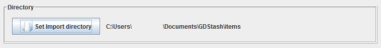
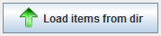
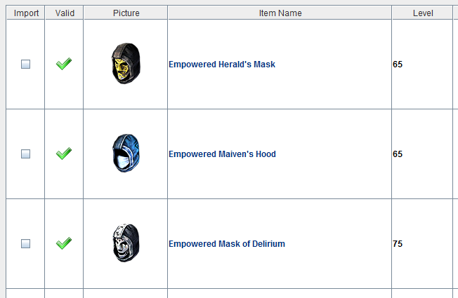
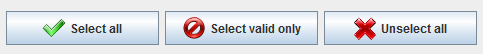
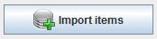
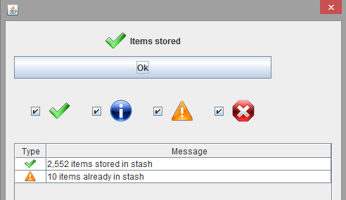
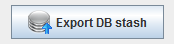
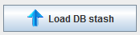
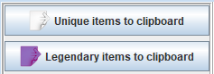
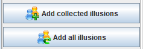

Import items
After GD Stash has been set up, you can import your items into it. If you used the popular method of storing items
in multiple shared stash files to allow for a larger storage, you can import all stashes at once by specifying the
import directory. GD Stash will then import any shared stash found in this directory and its subdirectories.
In addition, GD Stash will list the items of each character found in the import directory.

Once the import directory has been specified, the shared stashes and characters can be imported as follows.
Press the 'Load items from dir' button.

The items in the shared stashes and characters are then displayed in the table below the button row.
The 'Valid' column indicates whether the item is valid according to the settings you specified on the configuration
page with respect to affix combinations and completion bonuses.

With the selection buttons you can then mark the items for import. Alternatively you can manually flag the items
you want to import.

To import the flagged item, press

After the items have been imported, a summary is shown

If the summary shows items already in the stash, that means the same item was in more than one transfer file
(or the file had already been imported). An item is being identified as being identical, when it is the same
base item, has the same affixes, the same component and augment attached and the same seed value.
Export items
The content of the GD Stash database can be exported so it is more easily backed up. Instead of backing up
the entire database (most of which consists of the content of Grim Dawn's database.arz and Items.arc),
the items stored in it can be exported into one relatively small file. The file uses the extension .gds

The file can also be imported into GD Stash again.

As with the import of shared stashes, the items are shown in the table below the buttons and can be imported
the same way.
Copy collected items to the clipboard
If you trade items by posting them on forums, you can export your collected items here. You can either export
all unique or legendary items only.
As different forums might use different tags, you can adjust the format by editing the tags in HTMLTags.properties.

Export collected items as illusions
This requires the expansion 'Ashes of Malmouth'. If you want to add your collected items to the illusionist, use the
'Add collected items' button. If you want to add all Grim Dawn items to the illusions, press 'Add all illusions'.
